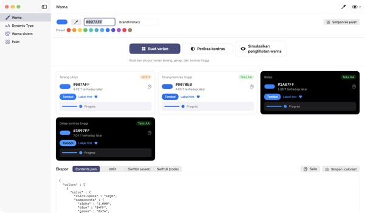
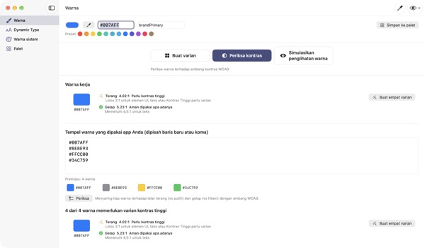
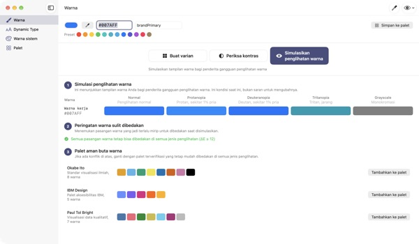
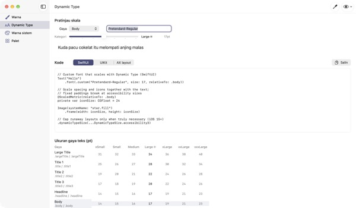

Masukkan satu warna,
dapatkan empat tampilan
Warna sistem menyesuaikan sendiri dengan mode gelap dan Tingkatkan Kontras. Warna brand Anda tidak. TetraTint mengambil satu warna mode terang, membuat varian Terang, Terang kontras tinggi, Gelap, dan Gelap kontras tinggi, lalu mengekspornya langsung ke Xcode.
Semua fitur gratis. Perlu macOS 14 atau lebih baru.

Coba warna brand Anda
Tempel nilai hex atau ketuk preset. Dengan perhitungan yang sama seperti di app, keempat varian dan kontrasnya langsung muncul.
Pernah melihat warna brand tenggelam di mode gelap?
Biru yang Anda pilih di mode terang tampak kusam di atas hitam, dan pengguna yang menyalakan Tingkatkan Kontras nyaris tak bisa membaca teksnya. Mencari warna untuk tiap tampilan dan menghitung kontras satu per satu bisa makan setengah hari. TetraTint membuat varian mengikuti cara warna sistem berubah antartampilan, dan langsung memberi tahu apakah tiap varian lolos.
Periksa semua warna yang Anda pakai sekaligus
Tempel seluruh daftar hex dari app Anda, dan tiap warna dinilai: aman dipakai apa adanya, perlu kontras tinggi, atau hanya untuk dekorasi.
Sekali klik, warna bermasalah jadi empat varian yang tersimpan di palet. Berguna juga untuk menyiapkan label aksesibilitas Kontras yang Memadai di App Store.

Lihat dengan mata penyandang buta warna
Simulasikan palet dengan protanopia, deuteranopia, tritanopia, dan skala abu-abu, plus peringatan untuk pasangan warna yang jadi sulit dibedakan.
Muat palet ramah buta warna Okabe–Ito, IBM, dan Paul Tol dengan sekali klik, atau pakai tombol mata di kanan atas untuk melihat seluruh app seperti itu.

Font kustom ikut ukuran teks
Lihat 11 gaya teks dalam 7 tingkat ukuran, lalu geser slider untuk melihat ukuran sebenarnya.
Masukkan nama PostScript font Anda dan dapatkan kode UIKit, SwiftUI, dan @ScaledMetric, plus kode yang mengubah tata letak saat teks besar.

Mulai dalam tiga langkah
- 1
Masukkan warna dasar
Tempel hex, ambil warna dari mana saja di layar dengan pipet, atau pilih preset.
- 2
Periksa empat varian
Baca lencana kontras dan setel varian yang tidak cocok dengan brand lewat pemilih warna.
- 3
Ekspor ke Xcode
Salin atau simpan sebagai Contents.json, .colorset, atau kode UIKit dan SwiftUI.
Cara varian dibuat dan arti lencananya
- Terang (Any)
- Warna Anda apa adanya
- Terang kontras tinggi
- Sedikit lebih jenuh, digelapkan sampai 4.5:1 di atas putih
- Gelap
- Sedikit lebih terang dan cerah (kecerahan +5, saturasi +3)
- Gelap kontras tinggi
- Diterangkan sampai 7:1 di atas hitam
- Teks AA
- Kontras dengan latar minimal 4.5:1, layak untuk teks
- UI 3:1
- Minimal 3:1, cukup untuk tombol dan ikon, tapi tidak untuk teks
- Rendah
- Di bawah 3:1, jangan dipakai untuk teks, ikon, atau status
- Ekspor
- Contents.json · .colorset · UIKit · SwiftUI, atau seluruh palet dalam satu .xcassets
Nilai acuan warna sistem berasal dari Human Interface Guidelines Apple dan bisa berubah seiring pembaruan sistem. Di app yang dirilis, gunakan API warna sistem.
Pertanyaan umum
Benar-benar gratis?
Ya. Semua fitur gratis, tanpa akun dan tanpa iklan. Kalau membantu, Anda bisa memberi tip di Pengaturan; tip tidak membuka fitur apa pun.
Varian yang dibuat tidak cocok dengan brand saya.
Setel tiap varian dengan pemilih warna di kartunya. Buat ulang semua akan membuang suntingan manual dan menurunkan ulang semuanya dari warna dasar.
Bagaimana varian dihitung?
Mengikuti cara warna sistem Apple benar-benar berubah antartampilan: sedikit lebih terang dan cerah di mode gelap, minimal 4.5:1 di atas putih untuk terang kontras tinggi, dan minimal 7:1 di atas hitam untuk gelap kontras tinggi.
Apa arti peringatan di simulasi penglihatan warna?
Artinya dalam simulasi itu, selisih dua warna (ΔE) turun di bawah 12 sehingga sulit dibedakan. Jangan andalkan warna saja: tambahkan ikon, pola, atau label, atau ganti ke palet ramah buta warna.
Bagaimana agar font kustom mendukung Dynamic Type?
Di Dynamic Type, masukkan nama PostScript font dan pilih gaya untuk mendapatkan kode UIKit, SwiftUI, dan @ScaledMetric. Pada ukuran aksesibilitas, Body membesar lebih dari tiga kali lipat, jadi hindari tinggi tetap dan lineLimit(1).
Warna yang diekspor terlihat beda dari warna sistem di app saya.
Nilai acuan berasal dari Human Interface Guidelines dan bisa berubah antarversi sistem. Untuk warna sistem, selalu gunakan API UIColor atau Color.
Di mana palet saya disimpan?
Hanya di Mac Anda. Tidak ada yang disinkronkan ke cloud atau dikirim ke mana pun. Lihat kebijakan privasi untuk detailnya.
Apakah warna yang diambil dengan pipet disimpan?
Tidak. Hanya nilai warna di titik yang dipilih yang dibaca dan dipakai sebagai warna kerja. Tidak ada gambar layar yang disimpan atau dikirim.
Bisa dipakai di Mac apa saja?
macOS 14 (Sonoma) atau lebih baru. Saat ekspor, Anda sendiri yang memilih lokasi penyimpanan file.
Laporan bug, ide fitur, atau pertanyaan? Kirim email ke leeo@kakao.com. Biasanya kami membalas dalam 2–3 hari.